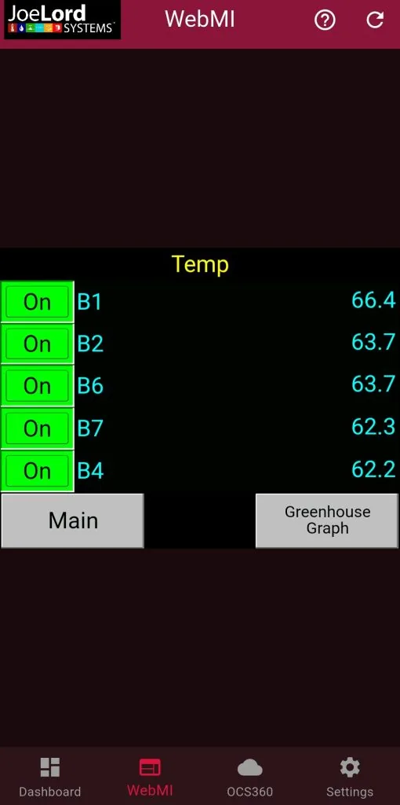
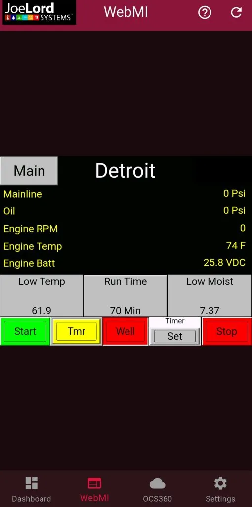

Your whole marsh, on your phone, any time of night.
Wireless monitoring and pump control for Wisconsin cranberry growers. Designed by a grower, with 300+ installations since 2009.



Six systems, custom designed to grow with your operation

Temperature monitoring
Real-time data from wireless probes. Instant alerts protect your crop from frost damage.
Soil moisture sensors
Eliminate over-irrigation with precise soil moisture tracking.
Irrigation automation
PLC-controlled pumps with vital statistics tracking. Monitor from your phone.
pH tracking
Keep an eye on water quality in your ponds and reservoirs, with alerts when pH drifts.
Instant alerts
Text or email notifications for any condition. Never miss a critical event.
OCS 360 data logging
Every reading logged so you can review trends season after season.
Your whole farm in your pocket
With Lord System, our phone app, you can check temperatures, run pumps, change setpoints and see alarms from anywhere, any time of night.
- Live temperature and moisture, updated every minute
- Pumps and valves, controlled right from your phone
- Setpoints adjusted without driving out
- Alarm status the moment something happens
On the App Store and Google Play.


OCS 360: your whole operation, on any screen


Joe lived an hour from his marsh
He needed to monitor temperatures and control his pumps without driving out multiple times a day. Unable to find a solution, he designed and built his own.
Word spread among fellow growers. Today Joe Lord Systems has completed over 300 installations, and when you call, you talk directly to the people who design, build, install and support your system.


New: FJ Dynamics auto steer, sold and supported in Warrens
Proven technology at a fraction of the big-brand price, with no subscription fees, from a local team that already knows your marsh.
- GPS auto steer for the tractor you already own
- RTK base stations, centimeter accuracy with no correction subscription
- Land leveling and excavator guidance for beds, ditches and ponds
From the marsh to the control room
View the full gallery


Ready to automate your marsh?
Let’s discuss how Joe Lord Systems can help your operation. The consultation is free.
- Visit
- 19205 Bittersweet Ave, Warrens, WI 54666
- Hours
- Monday to Friday, 8:00 AM to 5:00 PM. Saturday by appointment.